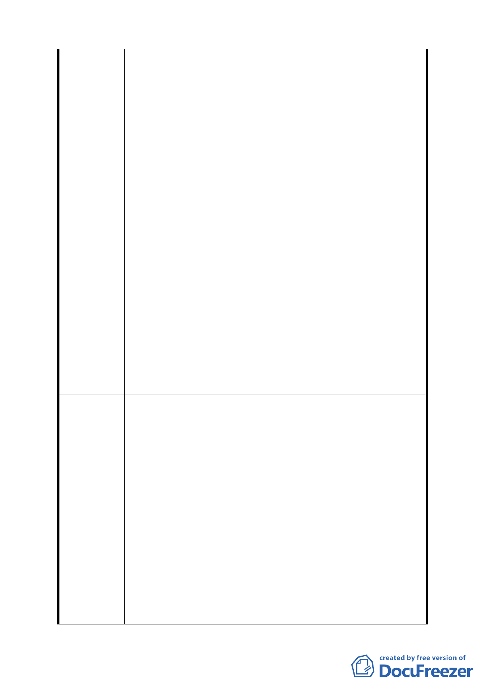

建議辦法
溫泉產業特定專用區範圍內土地其建敝率與容積率不
得超過 40％及 80％。
三、依都市計畫書陸、變更計畫內容土地使用分區管制（五）
「申請基地之原始地形應依坵塊圖上平均坡度之分布
狀態，區劃成若干均質區，平均坡度之計算方式依「臺
北市山坡地開發建築要點」規定辦理。平均坡度在 40
％以上之地區，不得建築使用，經台北市都市設計及土
地使用開發許可審議委員會審查同意後不在此限。」
四、開發許可規範原則（一）本區受限於溫泉泉量之供應，
若申請案已達「溫泉區管理計畫」之可供用水總量，則
不再受理溫泉使用案之申請。
五、開發許可規範原則（二）第 13 條：，既有合法建築物
不符前款規定時，仍得繼續為原有合法之使用，但不得
申請變更為營業使用。本計畫公告實施後之既有原不合
臺北市土地使用分區管制規則之建築，應於公告實施後
依前述開發許可原則 2 年內完成申請核定，核定後 3
年內建築完成，未於期限內依規定完成申請並獲核可，
且完成建築之基地及建築，不得再提出申請供營業使
用。
六、本都市計畫書對於政府應辦事項並未敘明，使得民眾對
於臺北市政府塑造溫泉特定區之發展遠景有所質疑。
一、水岸空間第 1 條增加敘明：若申請之基地範圍內，磺溪
溪濱步道並無經過基地範圍，得不適用此條，可不與水
岸保持 5 公尺以上之退縮建築距離。
二、建築容積本條文增列：既有溫泉經營業者得以現有之建
敝率與容積率提出申請，不受本條文規定限制。
三、坡地開發本條文増列：既有溫泉經營業者得以相關技師
簽證確定無安全之虞，並增設山坡地監測系統後得不受
本條文規定限制。
四、供水總量本條文增列：水權之申請與分配，應以現有溫
泉經營業者以原規模優先分配。
五、申請核定本條文增列：開發許可主管單位應優先核定現
有溫泉經營業者之所提之申請案。
六、建議本都市計畫書對於推動成立溫泉特定專用區的過程
中，政府應負責辦理的事項，應具體敘明並提出相關計
14